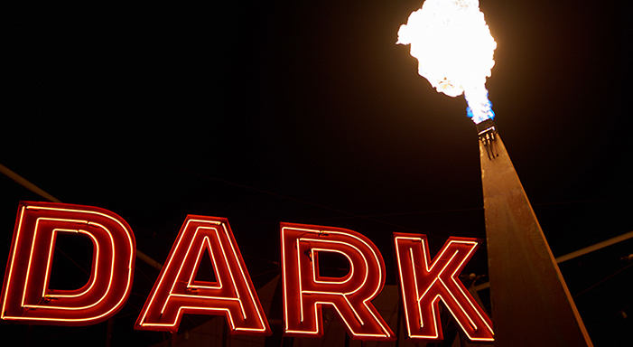
The best of Tasmanian winter is here, where all things pertaining to the shadows come out to shine on the longest, darkest days of the year.
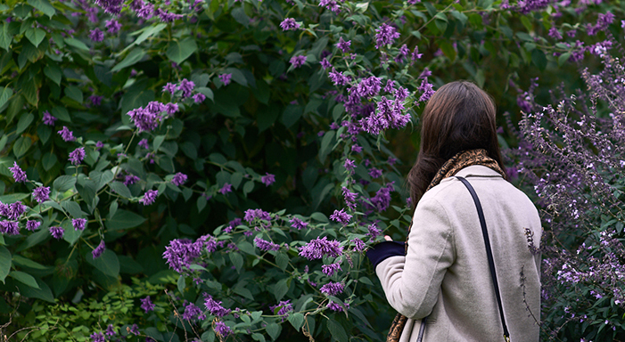
The cork oak is the perfect balance between foliage and trunk. Like the harmony and balance conveyed of a renaissance painting, this is the key art piece of these immersive gardens.
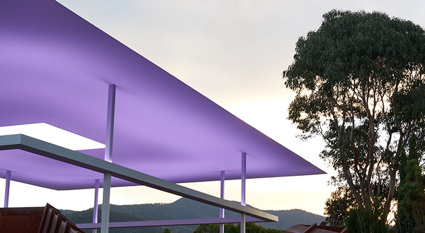
“What is important to me is to create an experience of wordless thought” James Turrell...bow down!
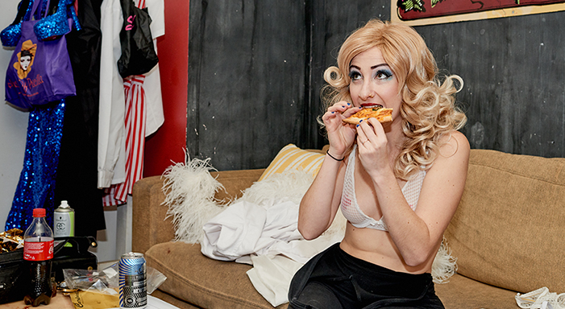
Behind the lights, costumes and perfectly choreographed dance routines is a world of female comradery and companionship.
More of Alice Gruzman awesomeness — tackling her space age looking thermomix that looks like it could solve all your problems.
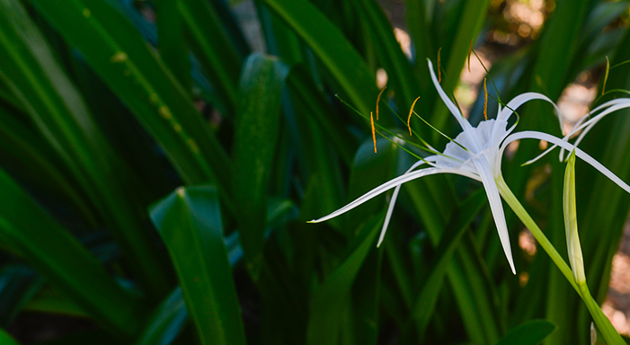
The feeling of isolation can lead to numerous realisations whether they’re good or bad, Hamilton Island is a place for rediscovery and acceptance of ones self.
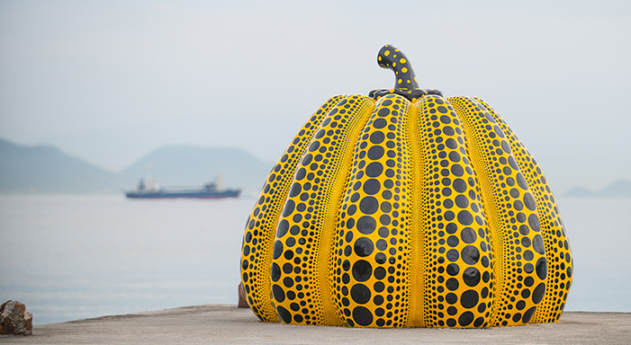
What was once an old fishing village is now a cutting edge contemporary arts hub embracing the natural landscape alongside the locals.
With Mt Fuji as your backdrop, Hakone is to Tokyoites what The Hamptons is to New Yorkers.
The prefecture of Tokyo is an everchanging amalgamation of many ‘wards’, each none like the other. The seamless mix of old and new work effortlessly together.
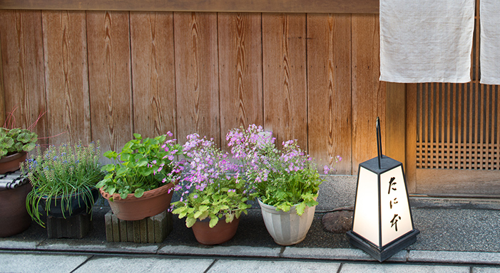
Home to kaiseki dining, shinto temples and Geishas, Kyoto is worth a peek.
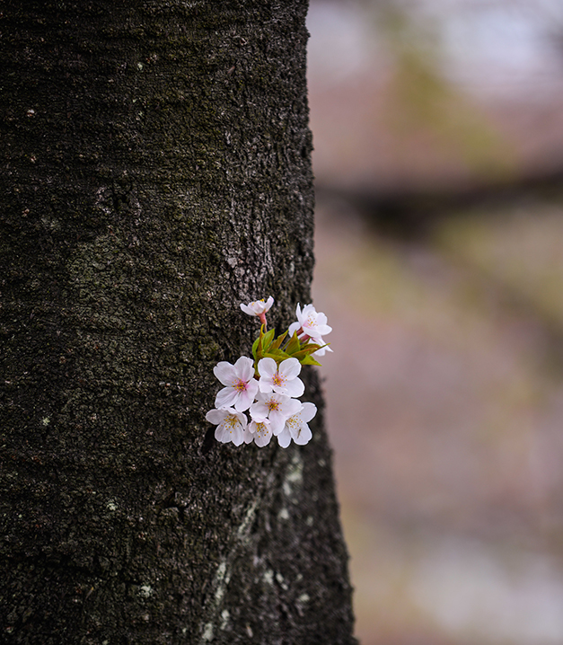
Hanami means literally ‘to view flowers’. The Japanese have a culture that wholeheartedly embraces the welcoming of spring through immersing themselves in Sakura.
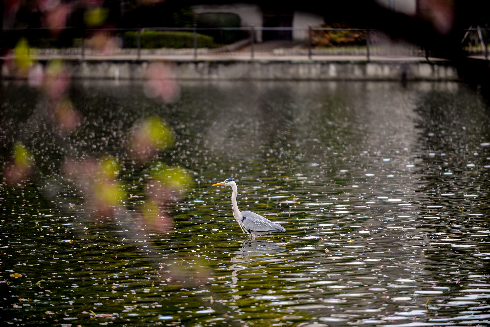
A Shibuya institution for good reason.
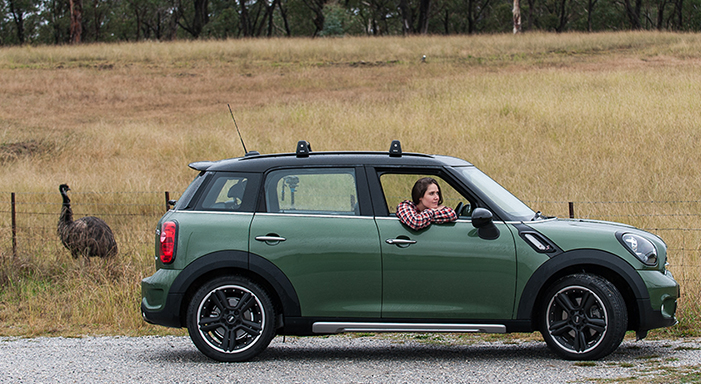
The Blue Mountains was my home growing up. It’s exceptionally green, exceptionally lush and surprisingly close to Sydney.
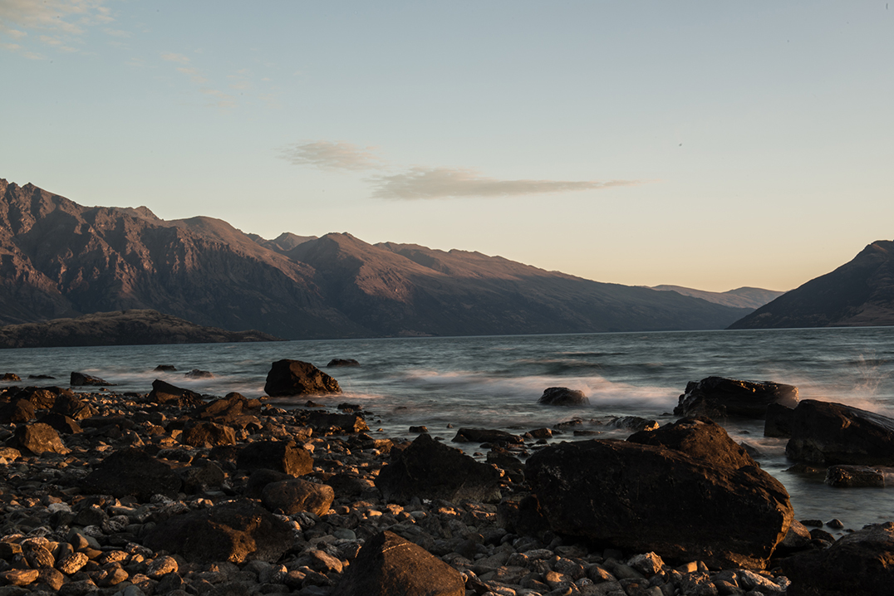
Welcome to Moordoor where the scenery is as everchanging as the weather.
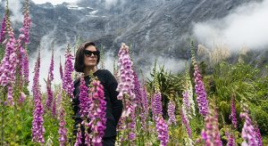
Snow capped peaks, crystal clear deep lakes and pure isolation, Milford Sound is all about the journey.